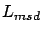
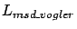
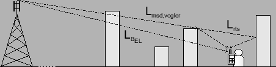
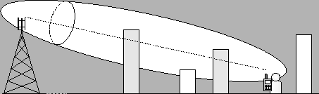

Siguiente: Desarrollo de Software
Subir: Modelos de propagación
Anterior: Modelo MOPEM
Índice General
Modelo propuesto: Vogler-Ikegami
Como se vio en la sección 5.3, el modelo de Walfisch-Ikegami
toma algunas hipótesis que muchas veces no son ciertas y por ende
repercuten negativamente en la exactitud de sus resultados. Son
destacables las hipótesis ya mencionadas sobre la regularidad en las
alturas de las edificaciones y una cantidad suficiente para que la
aproximación asintótica en el cálculo de la atenuación por múltiples
pantallas () sea confiable. Que la cantidad de edificios
entre el móvil y la base sea alta es en general verdad en
macroceldas, donde la cobertura de cada celda es suficientemente
grande para que en la mayoría de los puntos de cobertura sí se
cumpla dicha hipótesis. En las microceldas utilizadas hoy en día,
donde la cobertura de cada celda no sobrepasa el kilómetro de
distancia, esa hipótesis es falsa. En cuanto a la regularidad en las
edificaciones, ocurre en muchas zonas urbanas, aunque obviamente
también debe haber una regularidad en el terreno subyacente, pues
ésta también debe ser considerada en la altura edilícea (ver sección
5.3.3).
Además, aunque el grupo COST231 agregó factores correctivos para
contemplar el caso en que la antena transmisora estuviera a la
misma altura o por debajo de las edificaciones circundantes (como
es el caso en microceldas), en la práctica el modelo falla y tiene
errores que hacen que en tales ambientes no se utilice para
realizar predicciones [16].
Por lo tanto, la falla del modelo se encuentra en el cálculo de
. Con el objeto de mejorar la exactitud del modelo en
general, pero principalmente pensando en los casos ya mencionados,
en este proyecto se decidió proponer un nuevo modelo híbrido que
calcule la atenuación hasta la última edificación con el método de
Vogler (ver sección 4.3.1) y desde allí hasta el móvil
mediante el modelo de Ikegami (en la formulación del modelo
Walfisch-Ikegami). Es decir, la formula resulta:
Esta corresponde a la misma formulación que en el caso de
Walfisch-Ikegami, pero ahora el término
 se calcula
con la integral (4.3) que se vio en la sección
4.3.1. En la figura 5.5 se ilustra el camino de
propagación correspondiente a cada término de la ecuación.
Figura 5.5:
El perfil de edificios y los diferentes términos de la
ecuación del modelo propuesto Vogler-Ikegami
|

|
Lo único que resta especificar es cuáles edificios se considerarán
para crear el perfil necesario, dada la ubicación del transmisor,
receptor y la disposición y tamaño de todas las edificaciones
presentes. El criterio utilizado fue que un edificio formará parte
del perfil siempre que tenga alguna influencia significativa en la
atenuación. Esto es, siempre que la edificación se introduzca en el
primer elipsoide de Fresnel más de determinado porcentaje del primer
radio del mismo (ver sección 4.2). En particular se tomó
un porcentaje del 50% (edificios sombreados en la figura
5.6).
Figura 5.6:
Consideración del perfil de edificios en el modelo
propuesto Vogler-Ikegami
|

|
Los resultados concretos de este modelo se verán en las secciones
siguientes, pero es de esperar una exactitud mayor en el caso que
las edificaciones sean irregulares en su altura. De todas formas, la
hipótesis subyacente de que el mecanismo de propagación dominante es
por encima de los techos (y por lo tanto, hasta el móvil la mayoría
de los rayos llegan sobre los edificios) sigue manteniéndose. Esto
quiere decir que en aquellos casos donde la antena transmisora se
encuentre por debajo de los techos circundantes, donde puede haber
caminos entre el móvil y la base entre los edificios, este modelo
sobreestimará la atenuación de camino pues no tomará en cuenta
dichos caminos. Lo mismo sucede en las inmediaciones de la
radiobase, pues allí también son importantes.
Siguiente: Desarrollo de Software
Subir: Modelos de propagación
Anterior: Modelo MOPEM
Índice General
SAPO